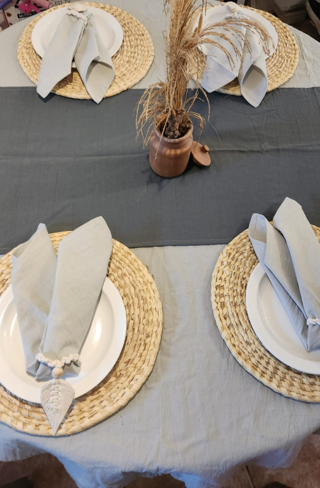
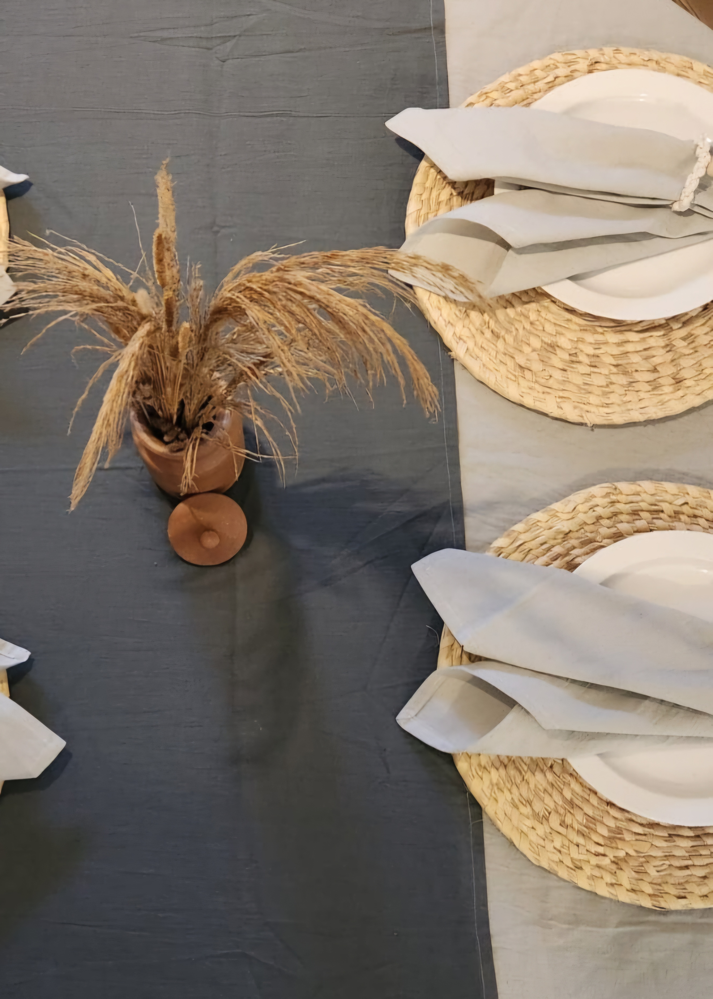
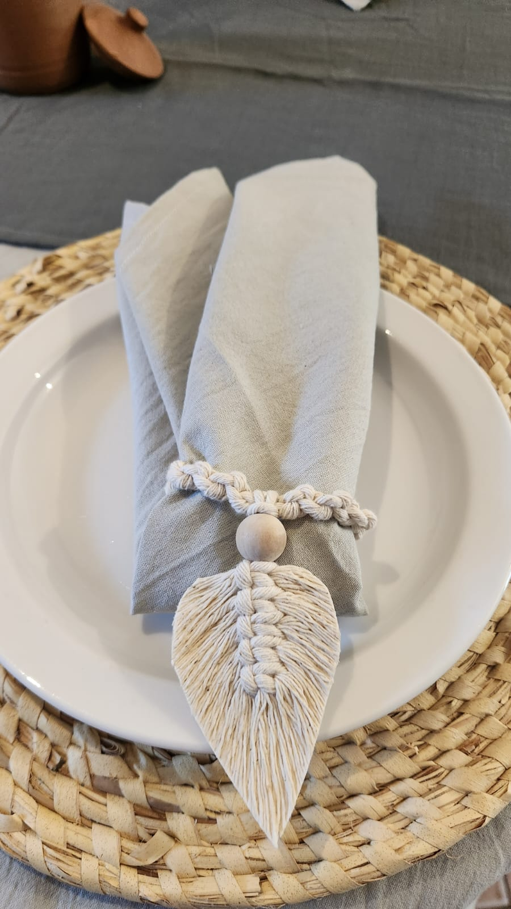
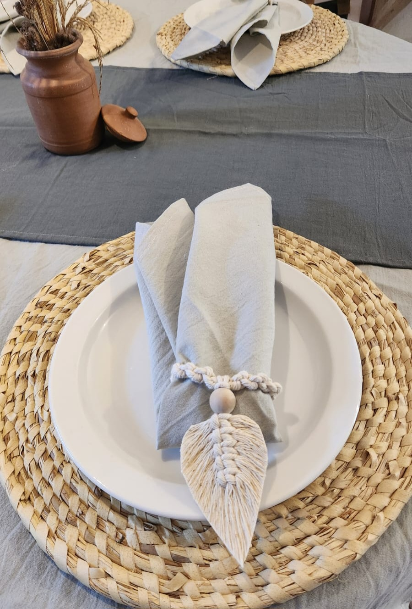

Colección Gris Sofisticado Exclusivo.
Esta línea evoca un estilo más moderno, urbano y minimalista, sin perder la calidez de las texturas naturales.
La pureza del diseño, la calidez del hogar.
Una propuesta contemporánea y equilibrada. Tejidos en tonos grises que aportan modernidad y estructura, combinados con accesorios que suavizan y completan la experiencia visual de tu mesa.





Kit Gris Sofisticado - Mesa Redonda (pieza única)
Diseñado para vestir mesas de gran tamaño con un carácter firme y sofisticado. Ideal para cenas formales o comidas diarias donde el diseño es protagonista.. Incluye mantel redondo gris perla con caída fluida, camino de mesa en tono cemento, 4 servilletas color gris perla y 4 servilleteros confecionados artesanalmente en macramé.
Medidas detalladas (aproximadas)
Mantel: 150 cm
Camino: 40 x 150 cm
Servilletas: 40 x 40 cm
Detalle de la Tela
El Tusor es una opción liviana pero resistente, ideal para proyectos textiles que requieren buena caída y durabilidad. Presenta una textura arrugada y un teñido semi-artesanal que le aporta un acabado natural y relajado Material: 100% Algodon - Peso: 520 grs - Prelavado: Si
Cuidados
- Apto para lavarropas con agua fría, ciclo suave o a mano. - No centrifugar. Secar al aire libre a la sombra, evitando el sol directo. - Probar reacción al lavado con un pedazo de la tela. - Puede tener un encogimiento residual de +/- 2-3%.